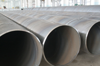

苏州螺旋管那里便宜 苏州螺旋管材质 苏州螺旋无
苏州螺旋管那里便宜 苏州螺旋管材质 苏州螺旋无缝钢管 天津螺旋钢管厂www.tjljgc.com 创办于2001年7月21日，公司生产219-2700X5-25MM的螺旋钢管（防腐螺旋焊管，螺旋管,直缝焊管）本螺旋钢管产品采用美国林肯焊机全线自动双面埋弧焊接，生产的螺旋钢管执行国际GB/T9711.1--1997和石油天然气行业标准SY/T5037-2000,SY/T5040-92进行生产，每一条螺旋钢管生产线配有Ｘ射线，超声波和静水压进行全线自动检测，螺旋钢管广泛应用于自来水工程、石化工业、化学工业、电力工业、农业灌溉、城市建设，是我国九十年代开发的二十个重点产品之一。
螺旋钢管材质为Q235、SS400、16Mn,也可按客户需要自选材质。
公司常年经销＂天津＂宝钢，成都，衡阳，诚德，洪都，鲁宝，无锡，等各大钢厂生产的无缝钢管，现库达＂２０００＂吨以上，百余种规格，是全国规模较大的无缝钢管供应基地，同时企业占地有2000m２室内仓库，3000m2室外库，产品按用户技术要求和有关国家标准组织经营，公司自创办以来，一直坚持“服务第一、质量第一、价格合理、客户至上、服务周到、让利客户、薄利多销为原则，诚实守信为宗旨”的经营理念，管理上坚持以人为本，服务上以客户为尊。
经营范围：方管，矩管，矩形管，方矩管，螺旋管，无缝管，合金管，结构管，高压锅炉管，不锈钢管，化肥专用管，石油裂化管,船舶用管， 流体管等。
苏州Q235螺旋管介绍
Q235螺旋管属于碳素结构钢，主要原料为铁水加废钢，钢中硫、磷含量高于优质碳素结构钢，一般硫≤0.050%，磷≤0.045%。由原料带入钢中的其他合金元素含量，如铬、镍、铜一般不超过0.30%，按成分和性能要求，此类钢的牌号由Q195，Q215A、B，Q235A、B、C、D，Q255A、B，Q275等钢级表示。
注：“Q”是屈服的“屈”字的汉语拼音大写字头，其后数字为该牌号最小屈服点（σs）值，其后的符号是按照该钢杂质元素（硫、磷）含量由高到低并伴随碳、锰元素的变化而分为A、B、C、D四等。
苏州螺旋缝埋弧焊钢管
承压流体输送用螺旋缝埋弧焊钢管（SY5036-83）是以热轧钢带卷作管坯，经常温螺旋成型，用双面埋弧焊法焊接，用于承压流体输送的螺旋缝钢管。钢管承压能力强，焊接性能好，经过各种严格的科学检验和测试，使用安全可靠。钢管口径大，输送效率高，并可节约铺设管线的投资。主要用于输送石油、天然气的管线。
苏州螺旋管常用产品规格
219.1*5.2-6.4-7.1
273.1*5.2- 6.4-7.1
323.9*5.2- 6.4-7.1-8.4
355.6*5.2- 6.4-7.1-8.4 
377*5.2- 6.4-7.1-8.4
406*5.2- 6.4-7.1-8.4-9.5
426*5.2- 6.4-7.1-8.4-9.5
457*5.2- 6.4-7.1-8.4-9.5
508*5.2- 6.4-7.1-8.4-9.5-10.3
559*5.2- 6.4-7.1-8.4-9.5-10.3-11.1
610*5.2- 6.4-7.1-8.4-9.5-10.3-11.1-12.7
630*6.4-7.1-8.4-9.5-10.3-11.1-12.7
660*6.4-7.1-8.4-9.5-10.3-11.1-12.7
711*6.4-7.1-8.4-9.5-10.3-11.1-12.7
762*6.4-7.1-8.4-9.5-10.3-11.1-12.7
813*6.4-7.1-8.4-9.5-10.3-11.1-12.7-14.3
864*7.1-8.4-9.5-10.3-11.1-12.7-14.3
914*7.1-8.4-9.5-10.3-11.1-12.7-14.3-15.9
965*8.4-9.5-10.3-11.1-12.7-14.3-15.9
1016*8.4-9.5-10.3-11.1-12.7-14.3-15.9-17.5
1067*9.5-10.3-11.1-12.7-14.3-15.9-17.5
1118*10.3-11.1-12.7-14.3-15.9-17.5
1168*10.3-11.1-12.7-14.3-15.9-17.5-19.1
1219*10.3-11.1-12.7-14.3-15.9-17.5-19.1-20.6
1422*10.3-11.1-12.7-14.3-15.9-17.5-19.1-20.6
螺旋缝埋弧焊钢管相关的知识比较多，以下是关于螺旋埋弧焊钢管调型参数计算分析和螺旋缝埋弧焊钢管设备的介绍。
螺旋埋弧焊钢管调型参数计算分析
承压流体输送用螺旋缝埋弧焊钢管（SY5036-83）是以热轧钢带卷作管坯，经常温螺旋成型，用双面埋弧焊法焊接，用于承压流体输送的螺旋缝钢管。其实也就是我们通常简称的螺旋钢管，只是根据不同地域不同习惯人们的叫法罢了。钢管承压能力强，焊接性能好，经过各种严格的科学检验和测试，使用安全可靠。钢管口径大，输送效率高，并可节约铺设管线的投资。主要用于输送石油、天然气的管。
推荐产品


相关推荐
随机推荐
- 崇左中钢联产外径750的X60螺旋缝埋弧焊钢管是几
- 需求并未好转，螺旋管厂价格延续弱势
- 国内X80钢级大口径螺旋管试制成功
- 原材料与螺旋钢管价格的双向传导机制能否顺畅
- 天津4月18日宝钢产194*10的Q235A煤气螺旋钢管规格齐
- 琼海本公司对外定做外径351的Q345美标螺旋钢管是
- 螺旋管厂走绿色低碳发展道路
- 螺旋钢管价格|螺旋钢管的防腐制作方法以及配管
- 贵阳厚壁螺旋钢管 贵阳螺旋钢管批发 贵阳螺旋埋
- 珠海化肥用壁厚5的GB/T3091-2008排水用大口径螺旋钢
- 需求情况不容乐观，螺旋钢管价格市场或难有逆
- 巢湖厚壁螺旋钢管 巢湖螺旋钢管网 巢湖螺旋焊钢
- 7月3日河北沧州钢材市场螺旋钢管价格
- 螺旋钢管企业“高成本、低盈利”
- 4月25日机械用外径121的大口径薄壁螺旋钢管单价
- 残次焊接螺旋钢管辨别有哪些办法
- 天津螺旋钢管市场价格小幅下降20元
- 天津螺旋钢管厂螺旋钢管焊接区的常见缺陷
- 商丘管道输送壁厚8的GB/T12771-1991排水用大口径螺
- 螺旋钢管厂寻找新市场空间的一些方法
- 螺旋焊管与直缝焊管的价格分析
- 利好积极因素增强，螺旋钢管价格探涨意愿强于
- 螺旋钢管生产工艺|严格的理化检验。
- 成本上涨因素，螺旋管厂通过涨价来消化
- 螺旋管厂在制作螺旋焊管过程中,需要主意的问题
- 2013年一季度：钢厂螺旋钢管价格难盈利原因分析
- 林芝小口径螺旋钢管 林芝打桩用螺旋管 林芝螺旋
- 澳门螺旋钢管批发 澳门螺旋钢管网 澳门螺旋埋弧
- 厚壁螺旋钢管的强度如何控制的比较好
- 需求较弱，螺旋钢管价格存在下跌风险
重点推荐
- 螺旋管厂在制作螺旋焊管过程中,需要主意的问题
- 波段和趋势共振对螺旋钢管价格有不可预计的推
- 广东Q345b螺旋管 广东X42螺旋管 广东16锰螺旋钢管
- 天津螺旋钢管市场价格小幅下降20元
- 不同板厚及不同环境温度下16Mn钢的预热温度
- 螺旋管厂、螺旋钢管价格交货技术条件
- 沈阳购买螺旋钢管 沈阳螺旋钢管生产工艺 沈阳螺
- 云南螺旋钢管图片 云南排水用螺旋钢管 云南螺旋
- 安庆购买螺旋钢管 安庆螺旋钢管生产工艺 安庆螺
- 天津螺旋管厂-节能减排效力显现
- 南昌生产钢管 南昌钢管壁厚标准 南昌钢
- 外贸16锰钢管 外贸Q235A螺 外贸L245钢管
- 大庆Q235A螺旋管 大庆q345c螺旋钢管 大庆Q345b螺旋管
- Q235B螺旋管生产工艺Q235B螺旋管的特点
- 螺旋钢管按用途分为
- 成都保温螺旋钢管 成都16锰螺旋钢管 成都
- 螺旋管的外径,内径,相邻螺旋间距约为多少算标准
- 黄冈GB/T9711螺旋管 黄冈螺旋钢管市场 黄冈l360螺旋
- 什么是螺旋缝钢管|Q235螺旋钢管工艺流程
- “2012世界末日”之后能否也让螺旋钢管劫难重生